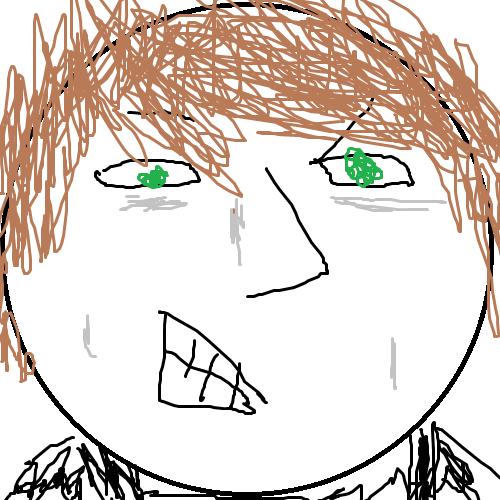

About Us
From Oberlin Import Awesome is a wonder team of 5 talented young computer science students from Oberlin College in Oberlin, OH: Mischa Lewis-Norelle, Laura Watiker, Paul Buser, Alex Cotsarelis, and Tim Hennigan. Our favorite meals are tea time, lunch, brunch, and two others (only two other team members are with me right now so the preferences of the other two will have to remain a mystery). If we had not built OpenWorld, we would have built one of several possible projects involving large amounts of fart noises.
Paul Buser is from Wellesley, MA. Oh boy, is he ever from Wellesley, MA. That is a sure fact. He can pass for a functional member of society when he wants to (the rest of us can't even pass for decently-functioning meth addicts most of the time, so we respect him for that). His deadpan is so intense that is is bordering on undead. Like zombie kitchenware. OOOOOOOOOOOOOOOOOOOOOOOOOOOO
Alex Cotsarelis is taller than the rest of us, but he's actually the youngest member of the team. The rest of us try to mentor him and shape him into a wise, mature adult like us. Usually it works. He really wanted to make a program that used fake Wi-Fi networks to communicate, or write MIPS code via SMS. He was outvoted.

Tim is only theoretically good with computers. Or maybe he's good with theoretical computers. This weekend he learned what an API is and wrote a bunch of borderline sacrilegious PHP scripts that eventually got reworked into relatively tame Python. Truth is, we only brought him along because he said he'd bring his Roomba. Which he did. So good on him.
One time Mischa got pulled over for running a stop sign while leaving a cheese shop with a table in the back seat of his car. He is the leading cause of the job shortage in America, as he currently holds 14 jobs, all of which involve technology and/or children. He drove us here. How nice. He is such a nice boy.
Most of the time, Laura has full control over her wrists and is in perfect health. We owe it to her to clarify that point. She spent a large portion of the weekend interpreting certain teammates' furious grunts and pointing and fixing their silly coding mistakes. She also found a tennis ball. That tennis ball got us through many hard times.